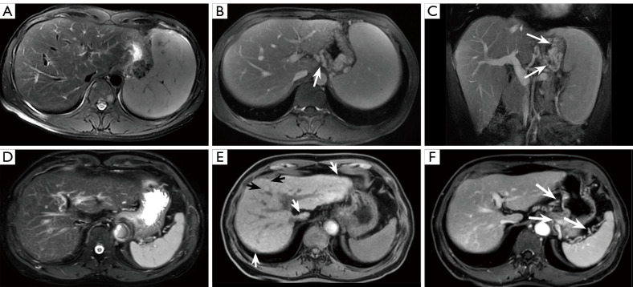
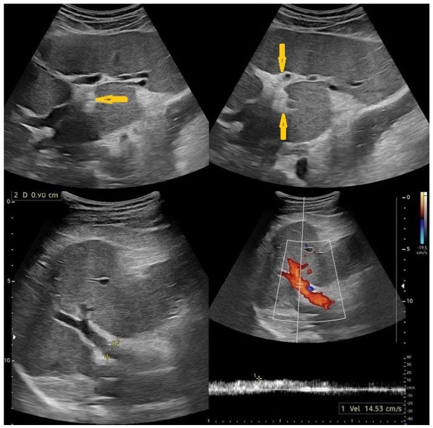
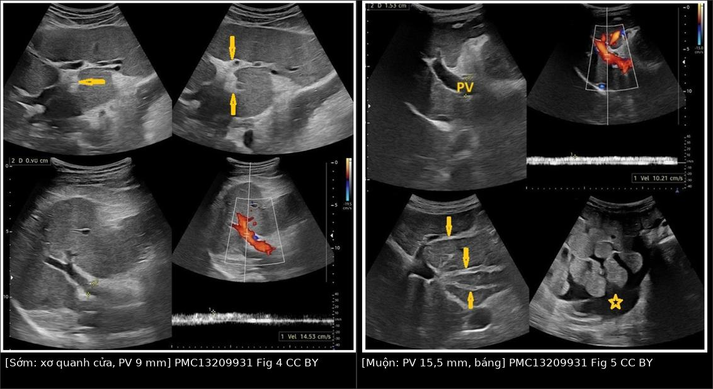
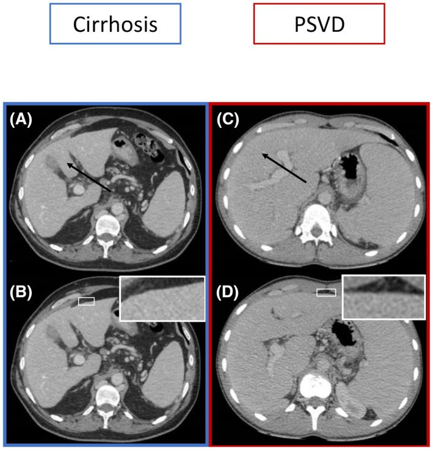
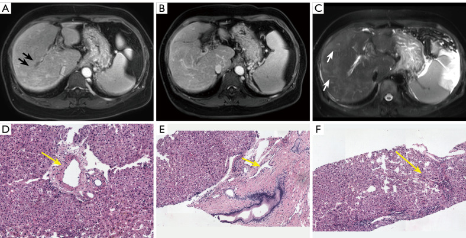

149 — Tăng áp cửa KHÔNG do xơ gan: PSVD/NCPF, sán máng và ba tầng tắc nghẽn / Non-cirrhotic portal hypertension: PSVD, schistosomiasis and the three tiers
Tags: pattern:tang-ap-cua vung:gan vung:bung score:PSVD-2026 protocol:MRI-gan-HBP protocol:Doppler-cua
Mức chắc chắn (certainty): tổng hợp y văn (literature synthesis) — số liệu lấy từ đồng thuận đa hội 2026 về PSVD/NCPF (PMC13374651), nghiên cứu hình ảnh PSVD – xơ gan (PMC12971336, PMC9544289) và bài tổng quan hình ảnh sán máng (PMC13209931). Các ca trong quiz là ca nguyên văn theo đúng tuổi – số đo – chú thích gốc.
Vì sao bài này quan trọng: cùng một hình ảnh "gan + lách to + giãn tĩnh mạch" nhưng tầng tắc nghẽn quyết định chẩn đoán, điều trị và tiên lượng. Bệnh nhân PSVD bị gắn nhãn "xơ gan" sẽ bị theo dõi tầm soát HCC suốt đời không cần thiết, có khi bị đưa vào danh sách ghép gan sai; ngược lại bệnh nhân xơ gan bị gọi "PSVD" sẽ bị bỏ tầm soát ung thư.
1. Tổng quan — ba tầng tắc nghẽn và vì sao HVPG có thể "bình thường"
- Phân tầng theo vị trí tắc (cơ chế quyết định hình ảnh):
- Trước xoang (pre-sinusoidal): bệnh tĩnh mạch cửa nhỏ/tiểu thùy — PSVD (porto-sinusoidal vascular disorder, gồm các tên cũ: tăng áp lực cửa vô căn, xơ hóa cửa không xơ gan, hoại tử nang-tái tạo, bệnh tĩnh mạch cửa tắc nghẽn), sán máng thể gan–lách, huyết khối tĩnh mạch cửa/lách, dò động–tĩnh mạch cửa.
- Trong xoang (sinusoidal): xơ gan các nguyên nhân, hội chứng tắc nghẽn xoang (SOS) sau ghép tủy.
- Sau xoang (post-sinusoidal): bệnh gan do tim, hội chứng Budd–Chiari, tắc tĩnh mạch gan.
- TẠI SAO HVPG đánh lừa: HVPG = áp lực tĩnh mạch gan bít (wedged) − áp lực tĩnh mạch gan tự do. Phép đo này chỉ phản ánh chênh áp từ xoang đến tĩnh mạch gan; tổn thương trước xoang không được tính vào → HVPG có thể bình thường hoặc thấp giả tạo dù bệnh nhân có giãn tĩnh mạch thực quản chảy máu. Vì vậy đo trực tiếp chênh áp cửa–chủ (porto-caval gradient, PCG) qua chọc qua da được xem là đáng tin hơn trong PSVD.
- Ngưỡng định lượng nằm lòng:
- PCG hoặc HVPG ≥ 10 mmHg = bằng chứng chắc chắn của tăng áp lực cửa (dấu hiệu đặc hiệu theo đồng thuận 2026).
- Dấu hiệu đặc hiệu của tăng áp cửa: chảy máu do giãn tĩnh mạch, giãn tĩnh mạch thực quản vừa/lớn, giãn tĩnh mạch dạ dày, shunt cửa–chủ tự phát, độ cứng lách > 40 kPa (khi không có bệnh tăng sinh tủy).
- Dấu hiệu KHÔNG đặc hiệu: báng, giãn tĩnh mạch thực quản nhỏ, tiểu cầu < 150 G/L, lách to.
- Sinh thiết gan để loại xơ gan: chiều dài 15 mm, có ít nhất 1 mảnh ≥ 10 mm là đủ tin cậy (đồng thuận 2026).
- Thang điểm chẩn đoán PSVD/NCPF (đồng thuận đa hội 2026, sau khi đã loại xơ gan và không có tiêu chuẩn loại trừ):
- Tăng áp cửa: không có = 0 điểm; chỉ dấu hiệu không đặc hiệu = 2 điểm; ≥ 1 dấu hiệu đặc hiệu = 3 điểm.
- Mô học: gan bình thường = 0; ≤ 2 tiêu chuẩn nhỏ = 2; ≥ 1 tiêu chuẩn lớn hoặc đủ 3 tiêu chuẩn nhỏ = 5.
- Bệnh kèm đã biết liên quan PSVD = +1; có nguyên nhân xơ gan = −1.
- Tổng điểm: ≤ 2 → không thể chẩn đoán; 3–4 → "có thể" PSVD/NCPF (theo dõi/chuyển trung tâm chuyên sâu); ≥ 5 → xác nhận.
- Cập nhật 2026 phải biết (dễ hỏi thi, dễ sai thực hành): sán máng, cavernoma tĩnh mạch cửa trong gan và SOS sau ghép tủy ≥ 6 tháng KHÔNG còn là tiêu chuẩn loại trừ. Nghĩa là một bệnh nhân sán máng vẫn có thể đồng thời có PSVD — đừng dừng lại ở chẩn đoán đầu tiên.
- Sán máng thể gan–lách (hepatosplenic schistosomiasis): trứng ký sinh gây phản ứng viêm quanh khoảng cửa → xơ hóa kiểu "ống điếu" Symmers (Symmers' pipe-stem fibrosis) = dày tăng âm thành tĩnh mạch cửa và các nhánh. Tổn thương quanh cửa, không phải trong xoang → cũng là tăng áp cửa trước xoang, và gan không bị xơ hóa lan tỏa ở giai đoạn đầu.
2. Mẫu hình + chẩn đoán phân biệt theo tầng tắc nghẽn (Gamut)
Theo tầng (câu hỏi duy nhất cần trả lời trước khi gọi tên bệnh):
- Trước xoang: PSVD, sán máng, huyết khối TM cửa/lách, dò ĐM–TM cửa → bề mặt gan nhẵn, không nốt tái tạo, tĩnh mạch cửa bất thường, lách rất to.
- Trong xoang: xơ gan (rượu, virus, MASH), SOS → bề mặt nốt, nốt tái tạo, ngấm thuốc dạng lưới thì muộn.
- Sau xoang: gan tim, Budd–Chiari → tĩnh mạch gan không thấy/không đều, gan đuôi to, ngấm thuốc "mosaic" thì muộn.
Gamut theo hình thái "gan không nốt + tăng áp cửa":
- PSVD (hay gặp nhất trong nhóm này, đặc biệt ở người trẻ, người dùng azathioprine/tiền sử ghép tạng, HIV, bệnh tự miễn).
- Sán máng thể gan–lách (vùng dịch tễ; tiền sử tiếp xúc nước ngọt).
- Huyết khối tĩnh mạch cửa mạn/cavernoma (kèm hoặc không kèm PSVD).
- Dò động–tĩnh mạch cửa (thường sau chấn thương/sinh thiết; tĩnh mạch cửa giãn sớm, động mạch gan to).
- Tăng sinh tủy/thrombocythemia gây huyết khối vi mạch trong gan (bệnh nền quan trọng vì độ cứng lách > 40 kPa không còn đặc hiệu trong nhóm này).
Mnemonic "GAN NHẴN – LÁCH TO": Giãn tĩnh mạch thực quản/dạ dày, Azathioprine/thuốc ức chế miễn dịch, Nhẵn bề mặt gan (không nốt), Nhánh cửa bất thường, Huyết khối TM lách/cửa, Ẵ (nhẵn) bề mặt = PSVD, Tủy tăng sinh (MPN), O (ổ) FNH-like trong gan.
3. Bảng so sánh phân biệt (ma trận đối chiếu)
| Thực thể (entity) | Hình ảnh điển hình | Chốt vào (rule-in) | Chốt loại (rule-out) | Gợi ý xác nhận |
|---|---|---|---|---|
| PSVD/NCPF | Gan nhẵn, có giãn TM + lách to; không nốt tái tạo, không ngấm lưới thì muộn; hay có nhánh mạch nhỏ trong gan tăng | Tăng áp cửa nặng + bề mặt gan nhẵn + loại xơ gan trên sinh thiết đủ chuẩn | Ngấm lưới thì muộn + nốt tái tạo + bề mặt nốt → xơ gan, không phải PSVD | MRI gan có cản quang đặc hiệu mật; sinh thiết 15 mm; đo PCG |
| Xơ gan | Bề mặt nốt, nốt tái tạo, ngấm thuốc dạng lưới thì muộn, teo phân thùy IV | Ngấm lưới thì muộn (94,3%) + nốt tái tạo (54,7%) | Bề mặt nhẵn + không có nốt tái tạo → nghĩ PSVD | MRI/CT đa thì; elastography; mô học |
| Sán máng gan–lách | Dày tăng âm quanh khoảng cửa ("ống điếu"), tĩnh mạch cửa giãn, lách to, báng giai đoạn muộn | Xơ hóa quanh cửa kiểu Symmers + tiền sử dịch tễ | Xơ hóa lan tỏa/bề mặt nốt → xơ gan; không có dày quanh cửa → loại | Siêu âm + ELISA/huyết thanh; tìm trứng |
| Huyết khối TM cửa mạn | Không thấy lòng TM cửa, mạng mạch bàng hệ quanh cửa (cavernoma), teo gan phải | Cavernoma: nhiều tĩnh mạch quanh đường mật/ thành túi mật > 2 mm | Lòng TM cửa bình thường → loại | CT/MRI đa thì; Doppler |
| Bệnh gan do tim | Gan to, TM gan giãn, ngấm thuốc mosaic thì muộn, ứ ở TM chủ dưới | TM gan giãn + bệnh tim phải | TM gan bình thường → loại | Siêu âm tim; xem bài 127 |
| Hội chứng Budd–Chiari | TM gan không thấy/hẹp, gan đuôi to, "flip-flop" ngấm thuốc, nốt tái tạo ở ngoại vi | Tắc TM gan có bằng chứng hình ảnh | TM gan thông thoáng cả 3 nhánh → loại | Doppler TM gan + CT/MRI; xem bài 124 |
- Con số để nhớ (nghiên cứu bệnh–chứng PSVD n = 106 vs xơ gan n = 104, PMC12971336): bề mặt gan nốt 25,5% ở PSVD so với 72,1% ở xơ gan; ngấm lưới thì muộn 20,8% vs 94,3%; nốt tái tạo 6,3% vs 54,7%; nhánh mạch nhỏ trong gan tăng 74,5% vs 39,4%; mức độ tăng áp cửa thì tương đương (lách to 72,6% vs 64,4%; giãn TM 97,2% vs 90,4%; báng 33,0% vs 30,8% — đều p > 0,05).
- Nghiên cứu CT thứ hai (PMC9544289): độ nốt bề mặt gan (LSN) 2,4 vs 3,1 (p < 0,001); LSN < 2,5 có Se 59%, Sp 81% cho PSVD; LSN < 2,5 + phân thùy IV bình thường/to → Sp 90%, độ chính xác 84%. Bề mặt nốt gặp 18% ở PSVD vs 74% ở xơ gan; phì đại đuôi + teo phân thùy IV gặp 26% vs 76%; lách 16 cm vs 14 cm.
- Mô hình MRI (4 đặc điểm) phân biệt PSVD với xơ gan: AUC 0,970 (tập kiểm định nội bộ) và 0,988 (tập độc lập) — cao hơn hẳn mô hình CT (0,825). Kết luận thực hành: MRI có cản quang là phương thức ưu tiên, không phải CT.
4. Protocol chụp + hệ phân độ/điểm chuẩn hóa
Protocol tối thiểu khi nghi tăng áp cửa không do xơ gan:
- Siêu âm Doppler hệ cửa: đường kính tĩnh mạch cửa (bình thường ≤ 13 mm), chiều dòng (hướng gan/phản hướng), vận tốc, lách (trục dài), báng, độ dày tăng âm quanh khoảng cửa. Đây là bước đầu rẻ, lặp lại được — và là nơi phát hiện sán máng.
- CT hoặc MRI bụng đa thì (nên là MRI): đánh giá bề mặt gan, nốt tái tạo, ngấm lưới thì muộn, tĩnh mạch cửa (huyết khối/cavernoma), tĩnh mạch gan, lách, shunt cửa–chủ. Với MRI nên dùng chất cản quang đặc hiệu mật (gadoxetate) để tìm FNH-like và tăng tín hiệu quanh cửa thì gan–mật — hai dấu hiệu hỗ trợ PSVD.
- Elastography: độ cứng gan thấp + độ cứng lách cao là tổ hợp gợi ý PSVD (gan "mềm" dù tăng áp cửa nặng vì xơ hóa quanh cửa, không phải xơ hóa cầu nối); độ cứng lách > 40 kPa là dấu hiệu đặc hiệu của tăng áp cửa.
- Nội soi tiêu hóa trên: phân độ giãn tĩnh mạch, dấu hiệu đỏ, chỉ định thắt/thuốc.
- Đo áp lực: HVPG khi nghi tầng xoang; PCG qua chọc qua da khi nghi trước xoang (HVPG có thể bình thường).
- Sinh thiết gan khi còn chẩn đoán phân vân — 15 mm, ≥ 1 mảnh ≥ 10 mm; đây là điều kiện bắt buộc trong đồng thuận 2026 trước khi kết luận PSVD.
Flowchart chẩn đoán:
flowchart TD
A["Giãn TM thực quản / lách to / tiểu cầu thấp"] --> B["Siêu âm Doppler cửa + xét nghiệm gan"]
B --> C{"Bề mặt gan có nốt?"}
C -->|Có| D["Nghĩ xơ gan - đánh giá theo xơ gan"]
C -->|Không| E["MRI gan đa thì + cản quang đặc hiệu mật"]
E --> F{"Ngấm lưới muộn + nốt tái tạo?"}
F -->|Có| D
F -->|Không| G["Nghĩ tăng áp cửa TRƯỚC xoang"]
G --> H["Tìm nguyên nhân: sán máng, huyết khối cửa, thuốc, bệnh tự miễn"]
H --> I["Đo PCG và sinh thiết gan 15 mm"]
I --> J{"Điểm PSVD 2026"}
J -->|"≥ 5"| K["Xác nhận PSVD/NCPF"]
J -->|"3-4"| L["Có thể - theo dõi, chuyển trung tâm"]
J -->|"≤ 2"| M["Không chẩn đoán được - tìm nguyên nhân khác"]
Điều trị khác nhau ở đâu (điểm người đọc hay hỏi):
- Kiểm soát tăng áp cửa giống nhau về nguyên tắc: chẹn beta không chọn lọc/thắt tĩnh mạch, xử trí chảy máu cấp, TIPS đặt ra khi thất bại (xem 176).
- PSVD: tiên lượng tốt hơn xơ gan ở cùng mức tăng áp cửa; nguy cơ HCC thấp hơn nhiều → không áp dụng lịch tầm soát HCC của xơ gan một cách máy móc (quyết định cá thể hóa; ghi rõ đây là suy luận từ sinh bệnh học, cần tra thêm dữ liệu dài hạn).
- Sán máng: điều trị praziquantel + kiểm soát tăng áp cửa; không dùng TIPS như lựa chọn đầu.
- Cavernoma/huyết khối cửa mạn: chống đông không tự động; đánh giá bệnh tăng sinh tủy trước.
5. Biến thể bình thường và cạm bẫy
- FNH-like trong PSVD (nốt tăng tín hiệu T1, không thải thuốc) rất dễ bị gọi là HCC hoặc di căn — đây là bẫy "satisfaction of search" ngược: thấy nốt là chốt ung thư, bỏ qua bối cảnh gan nhẵn + tăng áp cửa. Dùng chất cản quang đặc hiệu mật để phân biệt.
- Bề mặt gan nốt nhưng phân thùy IV bình thường/to vẫn có thể là PSVD (đồng thuận 2026 nêu rõ tổ hợp này hỗ trợ PSVD) — đừng chỉ dựa vào một dấu hiệu.
- Sán máng + xơ gan có thể cùng tồn tại: dày quanh cửa không loại trừ xơ gan; ngược lại bề mặt nốt không loại trừ sán máng.
- Đo HVPG bình thường không loại trừ tăng áp cửa trước xoang — đây là cạm bẫy chết người nhất trong bài.
- Tĩnh mạch cửa giãn ≥ 13 mm trên siêu âm có thể do thở ra/thay đổi tư thế; đo 2 lần, đối chiếu CT.
- Cavernoma trong gan không còn loại trừ PSVD (2026) — trước đây nhiều nơi vẫn dạy ngược lại.
- Shunt cửa–chủ tự phát lớn có thể làm giảm mức độ giãn tĩnh mạch → đánh giá thấp mức nặng nếu chỉ nhìn nội soi.
6. Tự lượng giá — Blind Quiz
Ca 1 — Nam 34 tuổi, giãn tĩnh mạch thực quản độ II, gan không nốt trên MRI.

- Câu hỏi: Hàng trên và hàng dưới khác nhau ở dấu hiệu nào? Nếu chỉ có CT, có thể bỏ sót gì?
Bấm để hiện đáp án
- Findings: (A–C) nhu mô gan đồng nhất, không nốt tái tạo, không ngấm lưới thì muộn; thấy nhiều quai giãn quanh dạ dày/lách (mũi tên) và lách to độ 2. (D–F) xơ gan: ngấm lưới thì muộn (F), nhiều nốt tái tạo (E, đầu mũi tên), bề mặt nốt.
- Chẩn đoán: PSVD (hàng trên) — tăng áp cửa nặng ngang xơ gan nhưng thiếu các dấu hiệu xơ gan.
- Ý nghĩa: mô hình MRI (4 đặc điểm) có AUC 0,970–0,988, CT chỉ 0,825 → MRI là lựa chọn ưu tiên.
- Nguồn ảnh: Song F et al., Quant Imaging Med Surg 2026, PMC12971336, Fig. 2, CC BY-NC-ND 4.0 (nguyên bản).
Ca 2 — Nam 40 tuổi vùng dịch tễ, gan to, lách to, chưa báng.

- Câu hỏi: Dấu hiệu chính là gì? Có bằng chứng tăng áp cửa chưa?
Bấm để hiện đáp án
- Findings: dày tăng âm thành tĩnh mạch cửa và nhánh (mũi tên) = xơ hóa kiểu ống điếu Symmers; gan kích thước trung bình, không tổn thương khu trú; PV 9 mm (bình thường ≤ 13 mm), vận tốc 14,5 cm/s (giảm), chưa thấy giãn tĩnh mạch bàng hệ.
- Chẩn đoán: sán máng thể gan–lách giai đoạn sớm — đã có xơ quanh cửa nhưng chưa tăng áp cửa rõ.
- Vì sao quan trọng: đây là giai đoạn còn điều trị praziquantel để chặn tiến triển; chờ đến khi báng/lách to là đã muộn.
- Nguồn ảnh: Alshoabi SA et al., Pathogens 2026, PMC13209931, Fig. 4, CC BY 4.0.
Ca 3 — Cùng bệnh, 8 năm sau.

- Câu hỏi: Kể 3 thay đổi định lượng chứng minh bệnh tiến triển. Điều gì không thay đổi?
Bấm để hiện đáp án
- Findings (phải): PV 15,5 mm (so với 9 mm), vận tốc giảm còn 10,2 cm/s, báng (sao), lách to, xơ quanh cửa dày hơn và lan rộng.
- Không thay đổi: bản chất tổn thương vẫn là xơ hóa quanh khoảng cửa — không phải xơ gan lan tỏa; gan vẫn giữ hình thái tương đối (không nốt rõ).
- Bài học: sán máng là mô hình "tăng áp cửa trước xoang" tiến triển theo thời gian phơi nhiễm, nên theo dõi bằng siêu âm định kỳ (đường kính cửa, vận tốc, lách, báng) rẻ và đủ.
- Nguồn ảnh: Alshoabi SA et al., Pathogens 2026, PMC13209931, Fig. 4 + Fig. 5, CC BY 4.0; ảnh ghép letterbox bằng
tools/make_composite.py.
Ca 4 — Cùng mức tăng áp cửa, hai bề mặt gan khác nhau.

- Câu hỏi: Ảnh nào là PSVD? Dấu hiệu nào trên CT âm thầm nhất nhưng giá trị nhất?
Bấm để hiện đáp án
- Findings: (A) teo phân thùy IV (mũi tên) + (B) bề mặt nốt (khung) = xơ gan. (C) phân thùy IV bình thường/to (mũi tên) + (D) bề mặt nhẵn = PSVD.
- Dấu hiệu giá trị nhất: phân thùy IV bình thường/to kèm LSN < 2,5 → Sp 90% cho PSVD (so với chỉ dùng LSN: Se 59%, Sp 81%).
- Cạm bẫy: bề mặt gan có thể nốt giả do lát cắt/artifact → luôn đo LSN trên thì tĩnh mạch cửa và đọc đa bình diện.
- Nguồn ảnh: Valainathan SR et al., Hepatology 2022, PMC9544289, Fig. 2, CC BY-NC 4.0.
Ca 5 — PSVD có huyết khối tĩnh mạch cửa: vẫn không phải xơ gan.

Bấm để hiện đáp án
- Findings: teo nhu mô ngoại vi + phì đại bù trung tâm và phân thùy I; hẹp/huyết khối tĩnh mạch cửa phải (mũi tên đen); nhiều nhánh mạch nhỏ trong gan (A,B); mô học: thoát vị nhánh tĩnh mạch cửa vào nhu mô (mũi tên vàng).
- Chẩn đoán: PSVD có huyết khối tĩnh mạch cửa — huyết khối không biến bệnh thành xơ gan, và cavernoma trong gan từ 2026 không còn là tiêu chuẩn loại trừ.
- Nguồn ảnh: Song F et al., Quant Imaging Med Surg 2026, PMC12971336, Fig. 5, CC BY-NC-ND 4.0 (nguyên bản).
Bài liên quan chéo
- 124 – Bệnh mạch máu gan (Budd–Chiari, SOS, phân tầng tắc nghẽn)
- 127 – Gan tim & tăng áp cửa sau xoang
- 166 – Tăng áp cửa ở xơ hóa gan bẩm sinh/Caroli
- 163 – Pylephlebitis & huyết khối tĩnh mạch mạc treo
- 176 – TIPS/DIPS: chỉ định & theo dõi shunt
- 128 – Ký sinh trùng đường mật (sán lá gan) (khác sán máng — phân biệt trong gamut ký sinh trùng)
Ảnh
- Tên file:
149_psvd_*/149_san-mang_*; nguồn + giấy phép từng ảnh ởimages/CREDITS.md, danh mục nguồn ởsources.md. - Ảnh CC BY-NC-ND (PMC12971336) giữ nguyên bản, không crop/ghép.
- Ảnh ghép
composite_149_san-mang_som-vs-muon_US.jpgchỉ dùng 2 ảnh CC BY 4.0 (PMC13209931).
Không dùng để chẩn đoán độc lập khi chưa có người hướng dẫn.